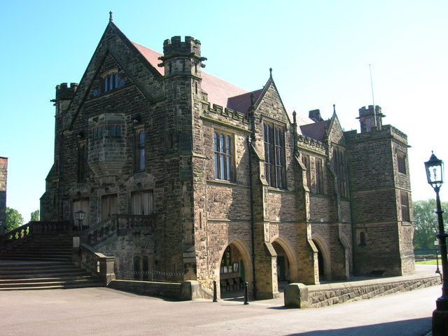

All About Roald Dahl
Roald Dahl was a British novelist, short-story writer, poet, screenwriter, and wartime fighter pilot. His books have sold more than 250 million copies worldwide.

Dahl was born in Wales to Norwegian immigrant parents. He served in the Royal Air Force during the Second World War. He became a fighter ace, scoring 5 confirmed victories, and, subsequently, an intelligence officer, rising to the rank of acting wing commander. He rose to prominence as a writer in the 1940s with works for children and for adults, and he became one of the world's best-selling authors. He has been referred to as "one of the greatest storytellers for children of the 20th century". His awards for contribution to literature include the 1983 World Fantasy Award for Life Achievement and the British Book Awards' Children's Author of the Year in 1990. In 2008, The Times placed Dahl 16th on its list of "The 50 greatest British writers since 1945".
Dahl's short stories are known for their unexpected endings, and his children's books for their unsentimental, macabre, often darkly comic mood, featuring villainous adult enemies of the child characters. His books champion the kindhearted and feature an underlying warm sentiment. His works for children include James and the Giant Peach, Charlie and the Chocolate Factory, Matilda, The Witches, Fantastic Mr Fox, The BFG, The Twits, and George's Marvellous Medicine. His adult works include Tales of the Unexpected.
Childhood
Roald Dahl was born in 1916 at Villa Marie, Fairwater Road, in Llandaff, Cardiff, Wales to Norwegians Harald Dahl and Sofie Magdalene Dahl (née Hesselberg).[14] Dahl's father had immigrated to the UK from Sarpsborg in Norway and settled in Cardiff in the 1880s with his first wife, a Frenchwoman named Marie Beaurin-Gresser. They had two children together (Ellen Marguerite and Louis) before her death in 1907.[15] His mother immigrated to the UK and married his father in 1911. Dahl was named after Norwegian polar explorer Roald Amundsen. His first language was Norwegian, which he spoke at home with his parents and his sisters Astri, Alfhild, and Else. The children were raised in the Lutheran faith and were baptised at the Norwegian Church, Cardiff.[16]

Dahl's sister Astri died from appendicitis at age 7 in 1920 when Dahl was three years old, and his father died of pneumonia at age 57 several weeks later.[18] Later that year, his younger sister Asta was born.[15] Dahl's mother decided to remain in Wales instead of returning to Norway to live with relatives, as her husband had wanted their children to be educated in English schools, which he considered the world's best.[19]
Dahl first attended The Cathedral School, Llandaff. At age eight, he and four of his friends were caned by the headmaster after putting a dead mouse in a jar of gobstoppers at the local sweet shop,[8] which was owned by a "mean and loathsome" old woman named Mrs. Pratchett.[8] The five boys named their prank the "Great Mouse Plot of 1924".[20] Gobstoppers were a favourite sweet among British schoolboys between the two World Wars, and Dahl referred to them in his fictional Everlasting Gobstopper which was featured in Charlie and the Chocolate Factory.[21]
Dahl transferred to St. Peter's boarding school in Weston-super-Mare. His parents had wanted him to be educated at an English public school, and this proved to be the nearest because of the regular ferry link across the Bristol Channel. Dahl's time at St. Peter's was unpleasant; he was very homesick and wrote to his mother every week but never revealed his unhappiness to her. After her death in 1967, he learned that she had saved every one of his letters;[22] they were broadcast in abridged form as BBC Radio 4's Book of the Week in 2016 to mark the centenary of his birth.[23] Dahl wrote about his time at St. Peter's in his autobiography Boy: Tales of Childhood.[24]
Repton School
From 1929, when he was 13, Dahl attended Repton School in Derbyshire. Dahl disliked the hazing and described an environment of ritual cruelty and status domination, with younger boys having to act as personal servants for older boys, frequently subject to terrible beatings. His biographer Donald Sturrock described these violent experiences in Dahl's early life.[25] Dahl expresses some of these darker experiences in his writings, which is also marked by his hatred of cruelty and corporal punishment.[26]
According to Dahl's autobiography, Boy: Tales of Childhood, a friend named Michael was viciously caned by headmaster Geoffrey Fisher. Writing in that same book, Dahl reflected: “All through my school life I was appalled by the fact that masters and senior boys were allowed literally to wound other boys, and sometimes quite severely... I couldn’t get over it. I never have got over it.”[27] Fisher was later appointed Archbishop of Canterbury, and crowned Queen Elizabeth II in 1953. However, according to Dahl's biographer Jeremy Treglown,[28] the caning took place in May 1933, a year after Fisher had left Repton; the headmaster was in fact J. T. Christie, Fisher's successor as headmaster. Dahl said the incident caused him to "have doubts about religion and even about God".[29]
He was never seen as a particularly talented writer in his school years, with one of his English teachers writing in his school report "I have never met anybody who so persistently writes words meaning the exact opposite of what is intended."[30] Dahl was exceptionally tall, reaching 6 feet 6 inches (1.98 m) in adult life.[31] He played sports including cricket, football and golf, and was made captain of the squash team.[32] As well as having a passion for literature, he developed an interest in photography and often carried a camera with him.[18]
During his years at Repton, the Cadbury chocolate company occasionally sent boxes of new chocolates to the school to be tested by the pupils.[33] Dahl dreamt of inventing a new chocolate bar that would win the praise of Mr Cadbury himself; this inspired him in writing his third children's book, Charlie and the Chocolate Factory (1964), and to refer to chocolate in other children's books.[34]
Throughout his childhood and adolescent years, Dahl spent the majority of his summer holidays with his mother's family in Norway. He wrote about many happy memories from those visits in Boy: Tales of Childhood, such as when he replaced the tobacco in his half-sister's fiancé's pipe with goat droppings.[35] He noted only one unhappy memory of his holidays in Norway: at around the age of eight, he had to have his adenoids removed by a doctor.[36] His childhood and first job selling kerosene in Midsomer Norton and surrounding villages in Somerset are subjects in Boy: Tales of Childhood.[37]
After school
After finishing his schooling, in August 1934 Dahl crossed the Atlantic on the RMS Nova Scotia and hiked through Newfoundland with the Public Schools Exploring Society.[38][39]
In July 1934, Dahl joined the Shell Petroleum Company. Following two years of training in the United Kingdom, he was assigned first to Mombasa, Kenya, then to Dar-es-Salaam, Tanganyika (now part of Tanzania). Along with the only two other Shell employees in the entire territory, he lived in luxury in the Shell House outside Dar es Salaam, with a cook and personal servants. While out on assignments supplying oil to customers across Tanganyika, he encountered black mamba snakes and lions, among other wildlife.[29]
Fighter Pilot
In August 1939, as the Second World War loomed, the British made plans to round up the hundreds of Germans living in Dar-es-Salaam. Dahl was commissioned as a lieutenant into the King's African Rifles, commanding a platoon of Askari men, indigenous troops who were serving in the colonial army.[40]
In November 1939, Dahl joined the Royal Air Force as an aircraftman with service number 774022.[41] After a 600-mile (970 km) car journey from Dar es Salaam to Nairobi, he was accepted for flight training with sixteen other men, of whom only three survived the war. With seven hours and 40 minutes experience in a De Havilland Tiger Moth, he flew solo;[42] Dahl enjoyed watching the wildlife of Kenya during his flights. He continued to advanced flying training in Iraq, at RAF Habbaniya, 50 miles (80 km) west of Baghdad. Following six months' training on Hawker Harts, Dahl was commissioned as a pilot officer on 24 August 1940, and was judged ready to join a squadron and face the enemy.[41][43]
He was assigned to No. 80 Squadron RAF, flying obsolete Gloster Gladiators, the last biplane fighter aircraft used by the RAF. Dahl was surprised to find that he would not receive any specialised training in aerial combat, or in flying Gladiators. On 19 September 1940, Dahl was ordered to fly his Gladiator by stages from Abu Sueir (near Ismailia, in Egypt) to 80 Squadron's forward airstrip 30 miles (48 km) south of Mersa Matruh. On the final leg he could not find the airstrip and, running low on fuel and with night approaching, he was forced to attempt a landing in the desert.[44] The undercarriage hit a boulder and the aircraft crashed. Dahl's skull was fractured and his nose was smashed; he was temporarily blinded.[45] He managed to drag himself away from the blazing wreckage and passed out. He wrote about the crash in his first published work.[45]
Dahl was rescued and taken to a first-aid post in Mersa Matruh, where he regained consciousness, but not his sight. He was transported by train to the Royal Navy hospital in Alexandria. There he fell in and out of love with a nurse, Mary Welland. A RAF inquiry into the crash revealed that the location to which he had been told to fly was completely wrong, and he had mistakenly been sent instead to the no man's land between the Allied and Italian forces.[46]
In February 1941, Dahl was discharged from the hospital and deemed fully fit for flying duties. By this time, 80 Squadron had been transferred to the Greek campaign and based at Eleusina, near Athens. The squadron was now equipped with Hawker Hurricanes. Dahl flew a replacement Hurricane across the Mediterranean Sea in April 1941, after seven hours' experience flying Hurricanes. By this stage in the Greek campaign, the RAF had only 18 combat aircraft in Greece: 14 Hurricanes and four Bristol Blenheim light bombers. Dahl flew in his first aerial combat on 15 April 1941, while flying alone over the city of Chalcis. He attacked six Junkers Ju 88s that were bombing ships and shot one down. On 16 April in another air battle, he shot down another Ju 88.[47]
On 20 April 1941, Dahl took part in the Battle of Athens, alongside the highest-scoring British Commonwealth ace of World War II, Pat Pattle, and Dahl's friend David Coke. Of 12 Hurricanes involved, five were shot down and four of their pilots killed, including Pattle. Greek observers on the ground counted 22 German aircraft downed, but because of the confusion of the aerial engagement, none of the pilots knew which aircraft they had shot down. Dahl described it as "an endless blur of enemy fighters whizzing towards me from every side".[48][49]
In May, as the Germans were pressing on Athens, Dahl was evacuated to Egypt. His squadron was reassembled in Haifa. From there, Dahl flew sorties every day for a period of four weeks, shooting down a Vichy French Air Force Potez 63 on 8 June and another Ju 88 on 15 June, but he began to get severe headaches that caused him to black out. He was invalided home to Britain where he stayed with his mother in Buckinghamshire.[50] Though at this time Dahl was only a pilot officer on probation, in September 1941 he was simultaneously confirmed as a pilot officer and promoted to war substantive flying officer.[51]

After being invalided home, Dahl was posted to an RAF training camp in Uxbridge. He attempted to recover his health enough to become an instructor.[52] In late March 1942, while in London, he met the Under-Secretary of State for Air, Major Harold Balfour, at his club. Impressed by Dahl's war record and conversational abilities, Balfour appointed the young man as assistant air attaché at the British Embassy in Washington, D.C. Initially resistant, Dahl was finally persuaded by Balfour to accept, and took passage on the MS Batory from Glasgow a few days later. He arrived in Halifax, Canada, on 14 April, after which he took a sleeper train to Montreal.[53]
Coming from war-starved Britain (in what was a wartime period of rationing in the United Kingdom), Dahl was amazed by the wealth of food and amenities to be had in North America.[54] Arriving in Washington a week later, Dahl found he liked the atmosphere of the US capital. He shared a house with another attaché at 1610 34th Street, NW, in Georgetown. But after ten days in his new posting, Dahl strongly disliked it, feeling he had taken on "a most ungodly unimportant job".[55] He later explained, "I'd just come from the war. People were getting killed. I had been flying around, seeing horrible things. Now, almost instantly, I found myself in the middle of a pre-war cocktail party in America."[56]
Dahl was unimpressed by his office in the British Air Mission, attached to the embassy. He was also unimpressed by the ambassador, Lord Halifax, with whom he sometimes played tennis and whom he described as "a courtly English gentleman". Dahl socialized with Charles E. Marsh, a Texas publisher and oilman, at his house at 2136 R Street, NW, and the Marsh country estate in Virginia.[46][57] As part of his duties as assistant air attaché, Dahl was to help neutralise the isolationist views still held by many Americans by giving pro-British speeches and discussing his war service; the United States had entered the war only the previous December, following the attack on Pearl Harbor.[58]
At this time Dahl met the noted British novelist C. S. Forester, who was also working to aid the British war effort. Forester worked for the British Ministry of Information and was writing propaganda for the Allied cause, mainly for American consumption.[59] The Saturday Evening Post had asked Forester to write a story based on Dahl's flying experiences; Forester asked Dahl to write down some RAF anecdotes so that he could shape them into a story. After Forester read what Dahl had given him, he decided to publish the story exactly as Dahl had written it.[60] He originally titled the article as "A Piece of Cake" but the magazine changed it to "Shot Down Over Libya" to make it sound more dramatic, although Dahl had not been shot down; it was published on 1 August 1942 issue of the Post. Dahl was promoted to flight lieutenant (war-substantive) in August 1942.[61] Later he worked with such other well-known British officers as Ian Fleming (who later published the popular James Bond series) and David Ogilvy, promoting Britain's interests and message in the US and combating the "America First" movement.[58]
This work introduced Dahl to espionage and the activities of the Canadian spymaster William Stephenson, known by the codename "Intrepid".[62] During the war, Dahl supplied intelligence from Washington to Prime Minister Winston Churchill. As Dahl later said: "My job was to try to help Winston to get on with FDR, and tell Winston what was in the old boy's mind."[60] Dahl also supplied intelligence to Stephenson and his organisation, known as British Security Coordination, which was part of MI6.[57] Dahl was once sent back to Britain by British Embassy officials, supposedly for misconduct—"I got booted out by the big boys," he said. Stephenson promptly sent him back to Washington—with a promotion to wing commander rank.[63] Toward the end of the war, Dahl wrote some of the history of the secret organisation; he and Stephenson remained friends for decades after the war.[64]
Upon the war's conclusion, Dahl held the rank of a temporary wing commander (substantive flight lieutenant). Owing to the severity of his injuries from the 1940 accident, he was pronounced unfit for further service and was invalided out of the RAF in August 1946. He left the service with the substantive rank of squadron leader.[65] His record of five aerial victories, qualifying him as a flying ace, has been confirmed by post-war research and cross-referenced in Axis records. It is most likely that he scored more than those victories during 20 April 1941, when 22 German aircraft were shot down.[66]
Post-war life
Dahl married American actress Patricia Neal on 2 July 1953 at Trinity Church in New York City. Their marriage lasted for 30 years and they had five children:
On 5 December 1960, four-month-old Theo Dahl was severely injured when his baby carriage was struck by a taxicab in New York City. For a time, he suffered from hydrocephalus. As a result, his father became involved in the development of what became known as the "Wade-Dahl-Till" (or WDT) valve, a device to improve the shunt used to alleviate the condition.[69][70] The valve was a collaboration between Dahl, hydraulic engineer Stanley Wade, and London's Great Ormond Street Hospital neurosurgeon Kenneth Till, and was used successfully on almost 3,000 children around the world.[71]
In November 1962, Dahl's daughter Olivia died of measles encephalitis, age seven. Her death left Dahl "limp with despair", and feeling guilty about not having been able to do anything for her.[71] Dahl subsequently became a proponent of immunisation and dedicated his 1982 book The BFG to his daughter.[72][73] After Olivia's death and a meeting with a Church official, Dahl came to view Christianity as a sham.[74] While mourning her loss, he had sought spiritual guidance from Geoffrey Fisher, the former Archbishop of Canterbury. He was dismayed by Fisher telling him that, although Olivia was in Paradise, her beloved dog Rowley would never join her there.[74] Dahl recalled years later: “I wanted to ask him how he could be so absolutely sure that other creatures did not get the same special treatment as us. I sat there wondering if this great and famous churchman really knew what he was talking about and whether he knew anything at all about God or heaven, and if he didn't, then who in the world did?[74]
In 1965, his wife Patricia Neal suffered three burst cerebral aneurysms while pregnant with their fifth child, Lucy. Dahl took control of her rehabilitation over the next months; Neal had to re-learn to talk and walk, but she managed to return to her acting career.[75] This period of their lives was dramatised in the film The Patricia Neal Story (1981), in which the couple were played by Glenda Jackson and Dirk Bogarde.[76]
In 1972 Roald Dahl met Felicity d'Abreu Crosland, niece of Francis D'Abreu who was married to Margaret Ann Bowes Lyon, the first cousin of the Queen Mother, while Felicity was working as a set designer on an advert for Maxim coffee with the author's then wife, Patricia Neal.[citation needed] Soon after the pair were introduced, they began an 11-year affair[citation needed] before in 1983 Neal and Dahl divorced and Dahl married Felicity,[77] at Brixton Town Hall, South London. Felicity (known as Liccy) gave up her job and moved into Gipsy House, Great Missenden in Buckinghamshire, which had been Dahl's home since 1954.[78]
In the 1986 New Years Honours List, Dahl was offered an appointment to Officer of the Order of the British Empire (OBE), but turned it down. He reportedly wanted a knighthood so that his wife would be Lady Dahl.[79][80] In 2012, Dahl was featured in the list of The New Elizabethans to mark the diamond Jubilee of Queen Elizabeth II. A panel of seven academics, journalists and historians named Dahl among the group of people in the UK "whose actions during the reign of Elizabeth II have had a significant impact on lives in these islands and given the age its character".[81] In September 2016, his daughter Lucy received the BBC's Blue Peter Gold badge in his honour, the first time it has ever been awarded posthumously.[82]